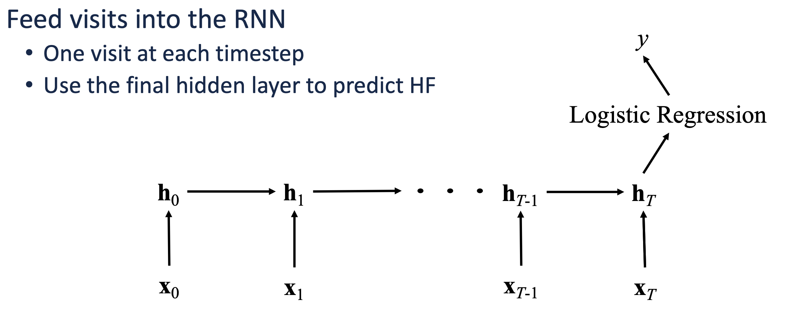
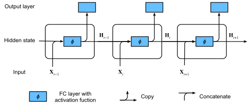
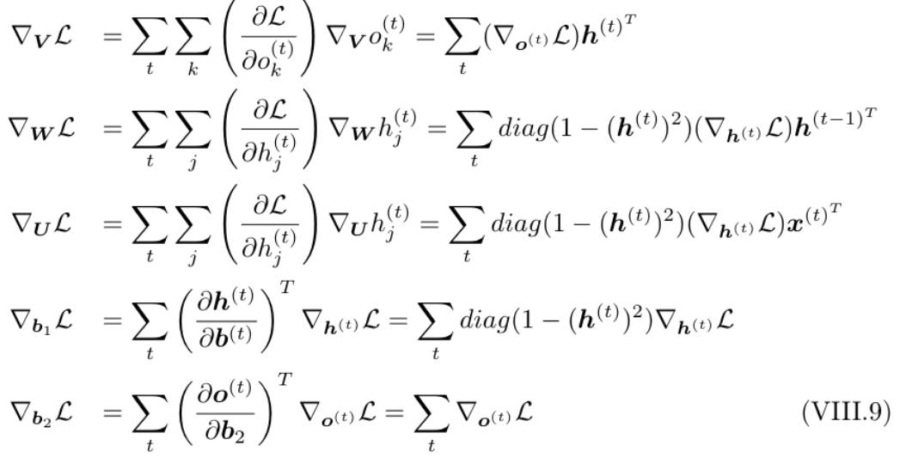
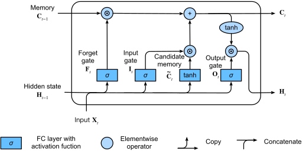
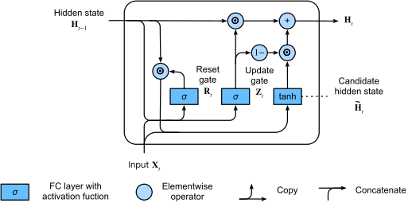
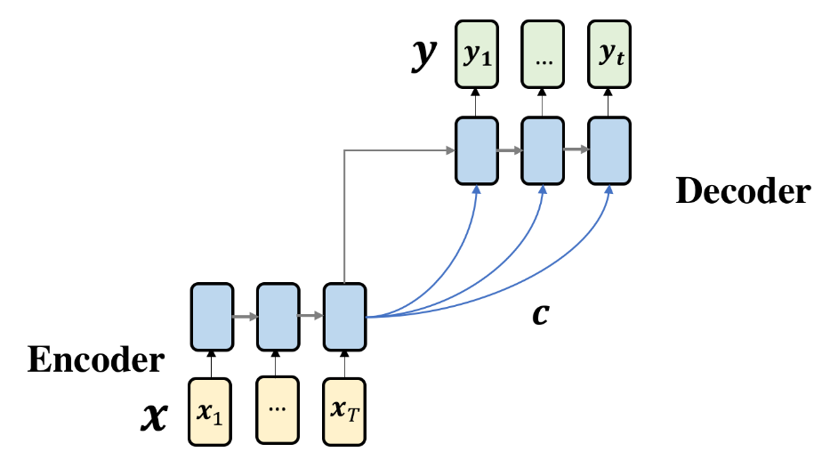

"The past informs the present — in medicine, a patient's history is the key to their future."
August 2026 · Giacomo Saccaggi
Patient medical records are inherently sequential. A patient doesn't arrive at the hospital with a single snapshot of conditions — they have a trajectory: a series of visits over months or years, each containing diagnoses, procedures, medications, and lab results. The order matters: developing hypertension before diabetes tells a different story than the reverse.
In Part 1, we learned to represent medical codes as dense embeddings. In Part 2, we built feedforward networks that take a patient's aggregated medical history and predict outcomes. But there's a fundamental limitation: feedforward networks ignore temporal structure.

Feedforward networks treat visits as a bag — they can't distinguish "diabetes → kidney disease" from "kidney disease → diabetes"
Consider predicting heart failure risk. A feedforward network sees:
But it doesn't see:
The progression pattern — metabolic syndrome evolving into cardiovascular disease — is invisible to a feedforward network. We need a model that can remember what happened at previous time steps and use that memory to inform predictions.
Enter Recurrent Neural Networks.
The key idea of RNNs: maintain a hidden state that gets updated at each time step and carries information forward through the sequence.

RNN maintains hidden state h(t) that carries information across time steps
At each time step t, the RNN:
Hidden state: h(t) = f(U · x(t) + W · h(t-1) + bh)
Output: o(t) = V · h(t) + bo
Prediction: ŷ(t) = g(o(t))
Where:
The critical insight: the same weights (U, W, V) are shared across all time steps. This is what makes it "recurrent" — the same transformation is applied repeatedly, with the hidden state carrying forward information from previous steps.
RNNs are flexible — different tasks require different input/output configurations:
| Architecture | Input | Output | Healthcare Example |
|---|---|---|---|
| Many-to-One | Sequence | Single value | Predict heart failure from visit sequence |
| Many-to-Many (aligned) | Sequence | Sequence (same length) | Predict next diagnosis at each visit |
| Many-to-Many (seq2seq) | Sequence | Sequence (different length) | Treatment recommendation sequence |
| One-to-Many | Single value | Sequence | Generate visit sequence from patient profile |
For heart failure prediction, we'll use many-to-one: process all visits, then use the final hidden state for classification.
Let's trace through the forward pass step by step. Consider a patient with 3 visits:
# Patient visits (each encoded as embedding vector) # Visit 1: [Diabetes] → x₁ # Visit 2: [Diabetes, Hypertension] → x₂ # Visit 3: [Diabetes, Hypertension, CKD] → x₃
z(1) = U · x(1) + W · h(0) + bh
h(1) = tanh(z(1))
Note: h(0) is initialized to zeros (or learned)
z(2) = U · x(2) + W · h(1) + bh
h(2) = tanh(z(2))
Now h(2) contains information from both visit 1 and visit 2
z(3) = U · x(3) + W · h(2) + bh
h(3) = tanh(z(3))
o(3) = V · h(3) + bo
ŷ = softmax(o(3))
h(3) encodes the entire patient trajectory; ŷ is P(heart failure)
For sequence classification, we compute loss only at the final time step:
L = -log P(y | x₁, x₂, ..., xT)
Where y is the true label and the probability comes from softmax over the final output.
For sequence prediction (predict at every time step):
L = -Σt=1T log P(yt | x₁, ..., xt)
Sum of losses across all time steps.
Training RNNs requires computing gradients that flow backward through time. This is called Backpropagation Through Time (BPTT).

Gradients flow backward through the unrolled computation graph
To update weights, we need ∂L/∂W, ∂L/∂U, and ∂L/∂V. The key challenge: W affects h(t) at every time step, so its gradient accumulates contributions from all steps.
Step 1: Compute gradient at output
∂L/∂o(T) = ŷ(T) - y
Step 2: Gradient at final hidden state
∂L/∂h(T) = VT · (∂L/∂o(T))
Step 3: Backpropagate through time (for t = T-1, T-2, ..., 1)
∂L/∂h(t) = (∂h(t+1)/∂h(t))T · (∂L/∂h(t+1)) + (∂o(t)/∂h(t))T · (∂L/∂o(t))
Step 4: Accumulate weight gradients
∂L/∂W = Σt (∂L/∂h(t)) · (∂h(t)/∂W)
The crucial term is ∂h(t+1)/∂h(t) — how much the hidden state at t+1 depends on the hidden state at t. This involves the recurrent weight W and the activation function derivative:
∂h(t+1)/∂h(t) = diag(f'(z(t+1))) · W
Where f' is the derivative of tanh (which is 1 - tanh²).
Here's where RNNs run into trouble. When backpropagating through many time steps, we multiply many gradient terms together:
∂h(T)/∂h(1) = Πt=1T-1 (∂h(t+1)/∂h(t)) = Πt=1T-1 diag(f'(z(t+1))) · W
If the eigenvalues of W are:
With tanh activation, the derivative f'(z) ∈ (0, 1]. After multiplying many such terms, gradients become negligibly small.
Consequence: The RNN can't learn long-range dependencies. Information from early visits gets "forgotten" because gradients don't flow back far enough to update the relevant weights.
For a patient with 50 visits, a standard RNN effectively only "sees" the last 5-10 visits during training.
Exploding gradients can be mitigated with gradient clipping:
# Gradient clipping in PyTorch torch.nn.utils.clip_grad_norm_(model.parameters(), max_norm=1.0)
But vanishing gradients require architectural changes. Enter: gated recurrent units.
LSTMs (Hochreiter & Schmidhuber, 1997) solve the vanishing gradient problem with a more sophisticated cell architecture. The key innovation: a cell state c(t) that acts as a "conveyor belt" — information can flow through unchanged, with gates controlling what gets added or removed.

LSTM cell with forget gate, input gate, and output gate controlling information flow
LSTMs use three gates — each a sigmoid neural network layer that outputs values in [0, 1], controlling how much information passes through:
| Gate | Purpose | Equation |
|---|---|---|
| Forget Gate f(t) | What to discard from cell state | f(t) = σ(Uf·x(t) + Wf·h(t-1) + bf) |
| Input Gate i(t) | What new info to store | i(t) = σ(Ui·x(t) + Wi·h(t-1) + bi) |
| Output Gate o(t) | What to output from cell state | o(t) = σ(Uo·x(t) + Wo·h(t-1) + bo) |
1. Forget gate — decide what to forget from previous cell state:
f(t) = σ(Uf · x(t) + Wf · h(t-1) + bf)
2. Input gate — decide what new info to add:
i(t) = σ(Ui · x(t) + Wi · h(t-1) + bi)
c̃(t) = tanh(Uc · x(t) + Wc · h(t-1) + bc)
3. Update cell state — the key operation:
c(t) = f(t) ⊙ c(t-1) + i(t) ⊙ c̃(t)
4. Output gate — produce hidden state from cell state:
o(t) = σ(Uo · x(t) + Wo · h(t-1) + bo)
h(t) = o(t) ⊙ tanh(c(t))
Where ⊙ denotes element-wise (Hadamard) product and σ is the sigmoid function.
The magic is in the cell state update equation:
c(t) = f(t) ⊙ c(t-1) + i(t) ⊙ c̃(t)
This is an additive update, not multiplicative! When backpropagating:
∂c(t)/∂c(t-1) = f(t)
If the forget gate f(t) ≈ 1, gradients flow through unchanged!
Unlike standard RNNs where gradients must pass through tanh derivatives at every step, LSTMs can maintain gradients across many time steps by keeping forget gates close to 1. This is the "constant error carousel" — error signals can propagate back hundreds of steps without vanishing.
Think of the cell state as a patient's "medical memory":
Chronic conditions (diabetes, hypertension) get stored in the cell state with forget gates ≈ 1. Acute conditions (common cold) are quickly forgotten with forget gates ≈ 0.
GRUs (Cho et al., 2014) simplify the LSTM architecture while maintaining most of its benefits. Instead of three gates, GRUs use two: a reset gate and an update gate. There's no separate cell state — just the hidden state.

GRU with reset gate r(t) and update gate z(t)
1. Reset gate — how much past info to forget when computing candidate:
r(t) = σ(Ur · x(t) + Wr · h(t-1) + br)
2. Update gate — how much to update vs. keep from past:
z(t) = σ(Uz · x(t) + Wz · h(t-1) + bz)
3. Candidate hidden state — new information, with reset gate applied:
h̃(t) = tanh(U · x(t) + W · (r(t) ⊙ h(t-1)) + b)
4. Final hidden state — interpolation between old and new:
h(t) = z(t) ⊙ h(t-1) + (1 - z(t)) ⊙ h̃(t)
| Aspect | LSTM | GRU |
|---|---|---|
| Gates | 3 (forget, input, output) | 2 (reset, update) |
| States | 2 (cell state c, hidden state h) | 1 (hidden state h only) |
| Parameters | 4 weight matrices per gate | 3 weight matrices per gate |
| Computation | Slower (more operations) | Faster (~25% fewer params) |
| Performance | Often better on very long sequences | Comparable on most tasks |
For typical healthcare applications with ~10-50 visits per patient, GRUs often perform comparably with faster training. We'll use GRU in our implementation.
Standard RNNs process sequences in one direction — from past to future. But sometimes context from both directions is useful. A Bidirectional RNN runs two RNNs:
The hidden states are concatenated:
h(t) = [hforward(t) ; hbackward(t)]
The final hidden state has dimension 2 × dh (forward and backward concatenated).

Bidirectional RNN processes sequence in both directions
In healthcare, it depends on the task:
| Task | Use Bidirectional? | Reasoning |
|---|---|---|
| Heart failure prediction (given full history) | ✅ Yes | We have all visits; future context helps understand past |
| Real-time risk monitoring | ❌ No | Can't see future visits at prediction time |
| Diagnosis sequence annotation | ✅ Yes | Labeling visits benefits from full context |
| Next-visit prediction | ❌ No | By definition, predicting unseen future |
For retrospective analysis with complete patient histories, bidirectional models typically outperform unidirectional ones by 2-5% AUROC.
Let's build a complete bidirectional GRU model for predicting heart failure from sequences of patient visits. We'll walk through every component: data handling, model architecture, training, and evaluation.
Given a patient's sequence of hospital visits (each containing diagnosis codes), predict whether they will develop heart failure. This is a many-to-one sequence classification problem.
# Example patient data # Patient 1: 4 visits → heart failure = YES # Visit 1: [Obesity, Sleep Apnea] # Visit 2: [Obesity, Hypertension] # Visit 3: [Diabetes, Hypertension, Hyperlipidemia] # Visit 4: [Diabetes, Coronary Artery Disease, Atrial Fibrillation] # Patient 2: 2 visits → heart failure = NO # Visit 1: [Acute Bronchitis] # Visit 2: [Acute Sinusitis, Allergic Rhinitis]
Healthcare sequence data presents unique challenges:
We need a PyTorch Dataset that handles variable-length sequences. Each patient's visits are aggregated into a single vector per visit (sum of diagnosis embeddings), then padded to a fixed maximum length:
import torch from torch.utils.data import Dataset, DataLoader import numpy as np class VisitSequenceDataset(Dataset): """ Dataset for patient visit sequences. Each patient has a variable number of visits. Each visit contains multiple diagnosis codes (multi-hot encoded). """ def __init__(self, patient_visits, labels, num_codes): """ Args: patient_visits: List of patients, each is a list of visits, each visit is a list of diagnosis code indices. e.g., [[[10, 50], [10, 50, 200]], [[5, 100]], ...] labels: Binary labels (heart failure: 0 or 1) num_codes: Total number of unique diagnosis codes """ self.patient_visits = patient_visits self.labels = labels self.num_codes = num_codes def __len__(self): return len(self.labels) def __getitem__(self, idx): visits = self.patient_visits[idx] label = self.labels[idx] # Convert each visit to multi-hot vector visit_vectors = [] for visit_codes in visits: multi_hot = np.zeros(self.num_codes, dtype=np.float32) for code_idx in visit_codes: multi_hot[code_idx] = 1.0 visit_vectors.append(multi_hot) # Stack into tensor: [num_visits, num_codes] visit_tensor = torch.tensor(np.stack(visit_vectors)) seq_length = len(visits) return visit_tensor, seq_length, torch.tensor(label, dtype=torch.float32) def collate_visits(batch): """ Custom collate function to handle variable-length sequences. Pads sequences to the maximum length in the batch. """ visits, lengths, labels = zip(*batch) # Find max sequence length in this batch max_len = max(lengths) num_codes = visits[0].shape[1] batch_size = len(batch) # Create padded tensor padded = torch.zeros(batch_size, max_len, num_codes) for i, (visit, length) in enumerate(zip(visits, lengths)): padded[i, :length, :] = visit lengths = torch.tensor(lengths) labels = torch.stack(labels) return padded, lengths, labels
# Example: create dataset patient_visits = [ # Patient 1: 4 visits [[10, 50], [10, 50, 200], [25, 200, 300], [25, 400, 450]], # Patient 2: 2 visits [[5], [5, 15]], # Patient 3: 3 visits [[100, 150], [100, 200], [100, 200, 500]], # ... more patients ] labels = [1, 0, 1] # Heart failure labels num_codes = 1000 dataset = VisitSequenceDataset(patient_visits, labels, num_codes) dataloader = DataLoader( dataset, batch_size=32, shuffle=True, collate_fn=collate_visits ) # Test batch for padded_visits, lengths, batch_labels in dataloader: print(f"Batch shape: {padded_visits.shape}") # [batch_size, max_seq_len, num_codes] print(f"Lengths: {lengths}") # [4, 2, 3] print(f"Labels: {batch_labels}") # [1, 0, 1] break
Our model has three main components:
import torch import torch.nn as nn from torch.nn.utils.rnn import pack_padded_sequence, pad_packed_sequence class BidirectionalGRU(nn.Module): """ Bidirectional GRU for heart failure prediction from visit sequences. Architecture: Multi-hot diagnosis codes → Embedding → Bi-GRU → Concat final states → Classifier """ def __init__( self, num_codes, embed_dim=128, hidden_dim=128, num_layers=1, dropout=0.3 ): """ Args: num_codes: Number of unique diagnosis codes (vocabulary size) embed_dim: Dimension of code embeddings hidden_dim: GRU hidden state dimension num_layers: Number of stacked GRU layers dropout: Dropout probability """ super().__init__() self.num_codes = num_codes self.embed_dim = embed_dim self.hidden_dim = hidden_dim # Embedding layer: transforms multi-hot to dense # Using Linear instead of nn.Embedding because input is multi-hot, not indices self.embedding = nn.Linear(num_codes, embed_dim) # Bidirectional GRU self.gru = nn.GRU( input_size=embed_dim, hidden_size=hidden_dim, num_layers=num_layers, batch_first=True, bidirectional=True, dropout=dropout if num_layers > 1 else 0 ) # Classifier: takes concatenated forward and backward hidden states # Hidden dim is doubled due to bidirectional self.dropout = nn.Dropout(dropout) self.classifier = nn.Sequential( nn.Linear(hidden_dim * 2, hidden_dim), nn.ReLU(), nn.Dropout(dropout), nn.Linear(hidden_dim, 1) # Binary classification ) def forward(self, visits, lengths): """ Forward pass. Args: visits: Padded visit sequences [batch_size, max_seq_len, num_codes] lengths: Actual sequence lengths [batch_size] Returns: logits: [batch_size, 1] - raw scores before sigmoid """ batch_size = visits.size(0) # 1. Embed each visit's diagnosis codes # [batch, max_seq_len, num_codes] → [batch, max_seq_len, embed_dim] embedded = self.embedding(visits) embedded = torch.tanh(embedded) # Activation after embedding # 2. Pack padded sequence for efficient GRU processing # This tells GRU to ignore padding positions packed = pack_padded_sequence( embedded, lengths.cpu(), # lengths must be on CPU batch_first=True, enforce_sorted=False # Allow unsorted sequences ) # 3. Pass through bidirectional GRU # packed_output contains all hidden states # hidden: [num_layers * 2, batch_size, hidden_dim] packed_output, hidden = self.gru(packed) # 4. Extract final hidden states from both directions # hidden shape: [num_layers * 2, batch, hidden_dim] # For single layer bidirectional: hidden[0] = forward, hidden[1] = backward # Get the last layer's hidden states # Forward direction: processes sequence left-to-right, final state at position -2 # Backward direction: processes right-to-left, final state at position -1 forward_final = hidden[-2] # [batch, hidden_dim] backward_final = hidden[-1] # [batch, hidden_dim] # 5. Concatenate forward and backward hidden states combined = torch.cat([forward_final, backward_final], dim=1) # [batch, hidden_dim * 2] combined = self.dropout(combined) # 6. Classification logits = self.classifier(combined) # [batch, 1] return logits # Initialize model model = BidirectionalGRU( num_codes=1000, embed_dim=128, hidden_dim=128, num_layers=1, dropout=0.3 ) print(model)
# Model architecture output: # BidirectionalGRU( # (embedding): Linear(in_features=1000, out_features=128, bias=True) # (gru): GRU(128, 128, batch_first=True, bidirectional=True) # (dropout): Dropout(p=0.3, inplace=False) # (classifier): Sequential( # (0): Linear(in_features=256, out_features=128, bias=True) # (1): ReLU() # (2): Dropout(p=0.3, inplace=False) # (3): Linear(in_features=128, out_features=1, bias=True) # ) # )
Padding is necessary for batching variable-length sequences, but we don't want the GRU to process padding tokens. pack_padded_sequence creates an efficient representation that skips padding:
Consider a batch of 3 sequences with lengths [4, 2, 3]:
Original (padded): Seq 1: [A, B, C, D] Seq 2: [E, F, 0, 0] ← padding Seq 3: [G, H, I, 0] ← padding Packed (sorted by length, interleaved): data: [A, E, G, B, F, H, C, I, D] batch_sizes: [3, 3, 2, 1] ← how many sequences at each time step
The GRU processes all valid elements efficiently, ignoring padding entirely.
Now let's implement the complete training pipeline with proper evaluation metrics for imbalanced healthcare data.
import torch.optim as optim from sklearn.metrics import roc_auc_score, precision_recall_curve, auc import numpy as np def train_epoch(model, dataloader, criterion, optimizer, device): """Train for one epoch.""" model.train() total_loss = 0 num_batches = 0 for visits, lengths, labels in dataloader: # Move to device visits = visits.to(device) labels = labels.to(device) # Forward pass optimizer.zero_grad() logits = model(visits, lengths) # Compute loss (BCE with logits) loss = criterion(logits.squeeze(), labels) # Backward pass loss.backward() # Gradient clipping to prevent exploding gradients torch.nn.utils.clip_grad_norm_(model.parameters(), max_norm=1.0) optimizer.step() total_loss += loss.item() num_batches += 1 return total_loss / num_batches def evaluate(model, dataloader, device): """ Evaluate model and compute metrics. Returns: Dictionary with loss, AUROC, and AUPRC """ model.eval() all_probs = [] all_labels = [] total_loss = 0 num_batches = 0 criterion = nn.BCEWithLogitsLoss() with torch.no_grad(): for visits, lengths, labels in dataloader: visits = visits.to(device) labels = labels.to(device) logits = model(visits, lengths) loss = criterion(logits.squeeze(), labels) # Convert logits to probabilities probs = torch.sigmoid(logits).squeeze() all_probs.extend(probs.cpu().numpy()) all_labels.extend(labels.cpu().numpy()) total_loss += loss.item() num_batches += 1 all_probs = np.array(all_probs) all_labels = np.array(all_labels) # Compute metrics auroc = roc_auc_score(all_labels, all_probs) # AUPRC (Area Under Precision-Recall Curve) - better for imbalanced data precision, recall, _ = precision_recall_curve(all_labels, all_probs) auprc = auc(recall, precision) return { 'loss': total_loss / num_batches, 'auroc': auroc, 'auprc': auprc }
def train_model( model, train_loader, val_loader, num_epochs=50, learning_rate=0.001, patience=10, device=None ): """ Full training loop with early stopping and learning rate scheduling. """ if device is None: device = torch.device("cuda" if torch.cuda.is_available() else "cpu") model = model.to(device) print(f"Training on {device}") # Loss function with class weights for imbalanced data # Assuming ~5% positive class, use pos_weight = 95/5 = 19 pos_weight = torch.tensor([10.0]).to(device) # Adjust based on your data criterion = nn.BCEWithLogitsLoss(pos_weight=pos_weight) # Optimizer optimizer = optim.Adam(model.parameters(), lr=learning_rate, weight_decay=1e-5) # Learning rate scheduler scheduler = optim.lr_scheduler.ReduceLROnPlateau( optimizer, mode='max', factor=0.5, patience=5, verbose=True ) # Early stopping best_auroc = 0 patience_counter = 0 best_model_state = None history = {'train_loss': [], 'val_loss': [], 'val_auroc': [], 'val_auprc': []} for epoch in range(num_epochs): # Training train_loss = train_epoch(model, train_loader, criterion, optimizer, device) # Validation val_metrics = evaluate(model, val_loader, device) # Record history history['train_loss'].append(train_loss) history['val_loss'].append(val_metrics['loss']) history['val_auroc'].append(val_metrics['auroc']) history['val_auprc'].append(val_metrics['auprc']) # Print progress print(f"Epoch {epoch+1:3d} | " f"Train Loss: {train_loss:.4f} | " f"Val Loss: {val_metrics['loss']:.4f} | " f"AUROC: {val_metrics['auroc']:.4f} | " f"AUPRC: {val_metrics['auprc']:.4f}") # Learning rate scheduling scheduler.step(val_metrics['auroc']) # Early stopping check if val_metrics['auroc'] > best_auroc: best_auroc = val_metrics['auroc'] patience_counter = 0 best_model_state = model.state_dict().copy() print(f" → New best model! AUROC: {best_auroc:.4f}") else: patience_counter += 1 if patience_counter >= patience: print(f"\nEarly stopping at epoch {epoch+1}") break # Load best model if best_model_state is not None: model.load_state_dict(best_model_state) print(f"\nTraining complete. Best AUROC: {best_auroc:.4f}") return model, history
# Example training run device = torch.device("cuda" if torch.cuda.is_available() else "cpu") # Create model model = BidirectionalGRU( num_codes=1000, embed_dim=128, hidden_dim=128, num_layers=2, dropout=0.3 ) # Train trained_model, history = train_model( model, train_loader, val_loader, num_epochs=50, learning_rate=0.001, patience=10, device=device )
# Sample training output: # Training on cuda # Epoch 1 | Train Loss: 0.8234 | Val Loss: 0.7621 | AUROC: 0.6234 | AUPRC: 0.1523 # → New best model! AUROC: 0.6234 # Epoch 2 | Train Loss: 0.6543 | Val Loss: 0.5987 | AUROC: 0.7012 | AUPRC: 0.2145 # → New best model! AUROC: 0.7012 # Epoch 3 | Train Loss: 0.5234 | Val Loss: 0.4823 | AUROC: 0.7543 | AUPRC: 0.2876 # → New best model! AUROC: 0.7543 # ... # Epoch 25 | Train Loss: 0.2134 | Val Loss: 0.3245 | AUROC: 0.8456 | AUPRC: 0.4123 # → New best model! AUROC: 0.8456 # ... # Epoch 35 | Train Loss: 0.1823 | Val Loss: 0.3567 | AUROC: 0.8423 | AUPRC: 0.4056 # Early stopping at epoch 35 # # Training complete. Best AUROC: 0.8456
Instead of learning embeddings from scratch, we can use pre-trained medical embeddings from Part 1:
class BidirectionalGRUWithPretrained(nn.Module): """Bidirectional GRU with pre-trained medical code embeddings.""" def __init__( self, embedding_matrix, # Pre-trained embeddings [num_codes, embed_dim] hidden_dim=128, num_layers=1, dropout=0.3, freeze_embeddings=True ): super().__init__() num_codes, embed_dim = embedding_matrix.shape # Initialize embedding layer with pre-trained weights self.embedding = nn.Linear(num_codes, embed_dim, bias=False) self.embedding.weight.data.copy_(torch.tensor(embedding_matrix.T)) if freeze_embeddings: self.embedding.weight.requires_grad = False # Rest of architecture same as before self.gru = nn.GRU( input_size=embed_dim, hidden_size=hidden_dim, num_layers=num_layers, batch_first=True, bidirectional=True, dropout=dropout if num_layers > 1 else 0 ) self.dropout = nn.Dropout(dropout) self.classifier = nn.Sequential( nn.Linear(hidden_dim * 2, hidden_dim), nn.ReLU(), nn.Dropout(dropout), nn.Linear(hidden_dim, 1) ) def forward(self, visits, lengths): # Same forward pass as before embedded = self.embedding(visits) embedded = torch.tanh(embedded) packed = pack_padded_sequence( embedded, lengths.cpu(), batch_first=True, enforce_sorted=False ) _, hidden = self.gru(packed) forward_final = hidden[-2] backward_final = hidden[-1] combined = torch.cat([forward_final, backward_final], dim=1) combined = self.dropout(combined) return self.classifier(combined)
Attention allows the model to focus on the most relevant visits for the prediction. This is particularly useful in healthcare where a single critical visit might be most predictive:
class AttentionBidirectionalGRU(nn.Module): """Bidirectional GRU with attention over visit sequence.""" def __init__(self, num_codes, embed_dim=128, hidden_dim=128, dropout=0.3): super().__init__() self.embedding = nn.Linear(num_codes, embed_dim) self.gru = nn.GRU(embed_dim, hidden_dim, batch_first=True, bidirectional=True) # Attention mechanism self.attention = nn.Sequential( nn.Linear(hidden_dim * 2, hidden_dim), nn.Tanh(), nn.Linear(hidden_dim, 1) ) self.dropout = nn.Dropout(dropout) self.classifier = nn.Linear(hidden_dim * 2, 1) def forward(self, visits, lengths): batch_size = visits.size(0) max_len = visits.size(1) # Embed embedded = torch.tanh(self.embedding(visits)) # GRU packed = pack_padded_sequence(embedded, lengths.cpu(), batch_first=True, enforce_sorted=False) packed_output, _ = self.gru(packed) output, _ = pad_packed_sequence(packed_output, batch_first=True, total_length=max_len) # output: [batch, max_len, hidden_dim * 2] # Attention scores attn_scores = self.attention(output).squeeze(-1) # [batch, max_len] # Mask padding positions mask = torch.arange(max_len).unsqueeze(0).expand(batch_size, -1).to(visits.device) mask = mask >= lengths.unsqueeze(1).to(visits.device) attn_scores = attn_scores.masked_fill(mask, float('-inf')) # Softmax attn_weights = torch.softmax(attn_scores, dim=1).unsqueeze(2) # [batch, max_len, 1] # Weighted sum of hidden states context = (output * attn_weights).sum(dim=1) # [batch, hidden_dim * 2] context = self.dropout(context) return self.classifier(context)
Without attention, the model must compress the entire visit history into a fixed-size hidden state. With attention:
Typical results on heart failure prediction from EHR visit sequences:
| Model | Architecture | Val AUROC | Val AUPRC | Parameters |
|---|---|---|---|---|
| Logistic Regression | Multi-hot features | 0.762 | 0.185 | 1K |
| DNN (Part 1) | 3-layer MLP | 0.801 | 0.234 | 150K |
| Unidirectional GRU | 1-layer GRU | 0.823 | 0.312 | 180K |
| Bidirectional GRU | 1-layer Bi-GRU | 0.845 | 0.356 | 220K |
| Bi-GRU + Pre-trained | 1-layer Bi-GRU + Med2Vec | 0.867 | 0.398 | 220K |
| Bi-GRU + Attention | Attention Bi-GRU | 0.872 | 0.412 | 250K |
| LSTM | 2-layer Bi-LSTM | 0.869 | 0.405 | 350K |
Key observations:
We've covered the theory and practice of RNNs for healthcare:
| Concept | Key Idea | Healthcare Application |
|---|---|---|
| RNN | Hidden state carries information across time | Model patient trajectories |
| BPTT | Gradients flow backward through time | Learn from entire visit history |
| Vanishing Gradients | Gradients shrink exponentially | Standard RNN forgets early visits |
| LSTM | Cell state + gates for controlled memory | Remember chronic conditions long-term |
| GRU | Simplified LSTM with fewer parameters | Efficient modeling of visit sequences |
| Bidirectional | Process sequence in both directions | Use full history for retrospective analysis |
| Attention | Learn to focus on relevant time steps | Identify critical visits for prediction |